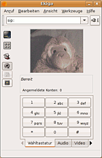

Easycam2
Archivierte Anleitung
Dieser Artikel wurde archiviert, da er - oder Teile daraus - nur noch unter einer älteren Ubuntu-Version nutzbar ist. Diese Anleitung wird vom Wiki-Team weder auf Richtigkeit überprüft noch anderweitig gepflegt. Zusätzlich wurde der Artikel für weitere Änderungen gesperrt.
Zum Verständnis dieses Artikels sind folgende Seiten hilfreich:
Easycam2 ist ein Tool für die Einrichtung von Webcams, falls diese nicht automatisch vom System erkannt wird. Viele Treiber sind in der Software integriert, unter Umständen muss man jedoch manuell nachhelfen.
Installation¶
32 bit¶
Die Kamera muss per USB-Kabel am Computer angeschlossen werden. Es wird eine Paketquelle für EasyCam2 angeboten.
Um aus der Fremdquelle zu installieren, muss man unabhängig von der Ubuntu-Version die folgende Paketquelle freischalten:
Hinweis!
Zusätzliche Fremdquellen können das System gefährden.
deb http://blognux.free.fr/ubuntu hardy main
Dann wird das Paket
easycam2-gtk (für GNOME)
oder
easycam2-qt (für KDE)
installiert [1].

64-Bit (1. Möglichkeit)¶
Da es keine Version für 64 Bit Betriebssysteme gibt, muss die Quelle von Hand installiert werden. Zuerst installiert [1] man das Paket
debget (universe)
und lädt bzw. installiert danach das Paket für Easycam2 [3]:
debget -i --dir http://blognux.free.fr/debian/dists/unstable/main/binary-i386/ easycam2.deb
Programmstart¶
Sofern keine weiteren Schritte notwendig sind (siehe Kompatibilitätsliste), kann man nun das Programm starten. Im GNOME-Menü befindet sich der Eintrag unter
"Anwendungen -> Zubehör -> EasyCam2" (Ubuntu 8.04 "Hardy Heron")
Im KDE-Menü befindet sich der Eintrag unter
"Dienstprogramme -> EasyCam2" (Ubuntu 8.04.1 "Hardy Heron")
Alternativ kann man das Programm auch über die Eingabe von lauchcam2 (beachte Schreibweise ohne "n") starten [5].
Wenn angezeigt wird, dass die gnome.ui nicht vorhanden ist, muss noch folgendes Paket installiert [1] werden:
python-gnome2
Nach dem Start des Programms und klicken auf "Vor" kann zuerst der Anschluss gewählt werden. Der entsprechende Eintrag sollte in etwa so aussehen: "Bus 001 Device 002: ID 046d:08f5 Logitech, Inc.". Nach einem weiteren Klick auf "Vor" erscheint der Knopf "Installation starten", den man anklickt. Nach kurzer Zeit erscheint eine Meldung über den Erfolg der Installation.
Hinweis:
Die Installation kann mehrere Minuten gehen, sodass der Eindruck entsteht, dass Easycam2 nicht zu reagieren scheint.

Benutzung der Kamera¶
Video und manchmal auch Mikrofon der Kamera sollten nun ohne weitere Einstellungen funktionieren. In manchen Fällen muss der Aufnahmepegel für das Mikrofon angepasst werden. Hierzu öffnet man die Lautstärkeeinstellungen und setzt den entsprechenden Pegel im Abschnitt Aufnahme nach oben. Es empfiehlt sich, zusätzlich den Mikrofonverstärker einzuschalten. Eventuell ist im Anschluss an die Einstellungen ein Neustart nötig. Die Audioeinstellungen können über die entsprechenden Lautstärkeregler in GNOME, KDE usw. eingestellt werden. Alternativ kann Alsamixer verwendet werden.
Die Kamera kann nun in Anwendungen wie Ekiga (siehe Screenshot), Wengo  und aMSN benutzt werden.
und aMSN benutzt werden.
Kompatibilitätsliste¶
Welche Webcams unterstützt werden, kann den Listen der in EasyCam2 enthaltenen Treiber entnommen werden:
ov51-Treiber für Webcams von Creative, D-Link, Microsoft, Sony und vielen anderen
pwc-Treiber für Webcams von Phillips, Logitech, Creative und anderen
gspca/spca5xx-Treiber für Webcams von Agfa, Aiptek, Kodak, Mustek und vielen anderen
uvc-Treiber für Webcams von Creative, Logitech, Fujifilm und anderen
Folgende Webcams wurden von Ubuntu-Benutzern erfolgreich mit EasyCam2 installiert:
Logitech Quickcam Messenger OEM (Product ID 046d:08f0)
Logitech Quickcam Communicate (Product ID 046d:08f5, Reparatur des Treibers notwendig)
Logitech Quickcam Communicate¶
Die Quickcam Communicate von Logitech Corp. ist eine Webkamera mit integriertem Mikrofon. Über das USB-Kabel wird sowohl die Kamera als auch das Mikrofon angesteuert.
Der Treiber für die Quickcam Communicate ist in der in Easycam2 enthaltenen Version kaputt, sodass EasyCam2 bei der Installation mit einer Fehlermeldung hängen bleiben würde. Es muss deshalb die funktionierende Version des Treibers qc-usb-messenger-1.6.tar.gz heruntergeladen werden. Das Archiv entpackt man [4] und kopiert den entstandenen Ordner qc-usb-messenger-1.6 am einfachsten im Terminal [3] in den EasyCam2-Ordner:
sudo cp -r qc-usb-messenger-1.6/* /usr/share/EasyCam2/drivers/qcnews/
Problemlösungen¶
Ab Jaunty kommt beim Installieren von easycam2-gtk folgende Fehlermeldung:
Die folgenden Pakete haben nicht erfüllte Abhängigkeiten:
easycam2-gtk: Hängt ab: python2.4-glade2 ist aber nicht installierbar
Hängt ab: python2.4-gtk2 ist aber nicht installierbarUm das zu Umgehen muss man die qt-Version easycam2-qt installieren. Seit Jaunty passen sich Qt-Programme auch gut an die Oberfläche an.

- Erstellt mit Inyoka
-
 2004 – 2017 ubuntuusers.de • Einige Rechte vorbehalten
2004 – 2017 ubuntuusers.de • Einige Rechte vorbehalten
Lizenz • Kontakt • Datenschutz • Impressum • Serverstatus -
Serverhousing gespendet von